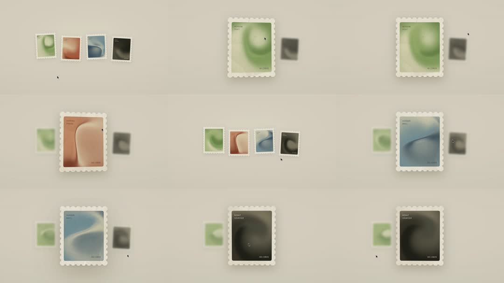

Shader Stamps: an infinite coverflow of postage stamps on warm beige - each stamp has serrated die-cut edges framing soft aurora shader art (green 'SEASON QUIT', terracotta 'SUDDEN SNEAK', blue 'AIRFLOW', black 'SIGHT COUNTER' 01/2025); the center stamp is large and crisp while neighbors shrink, blur and desaturate toward the edges; the strip glides horizontally (drag or auto-scroll).

Build an infinite stamp coverflow. Canvas warm beige #E8E3D8. Stamp card: 300x400 white, serrated edge via mask (radial-gradient dots repeated at 12px on a 6px inset - mask-image with repeating circles punched out) so the art shows through a perforated border; inside, a 24px-margin art panel running a soft aurora shader (2-3 radial gradients in green/terracotta/blue/black palettes, slow swirl) + top-left 10px monospace title + bottom-right '01/2025'. Lay 6 stamps on a horizontal track; each frame compute distance from viewport center: scale lerp 1 -> 0.35, blur 0 -> 12px, opacity 1 -> 0.25, slight y-sink (+30px). Track glides at constant 40px/s, wraps modulo total width for infinity; on drag, fling with velocity decay then snap nearest stamp to center (400ms ease-out). Cursor: small dot cursor visible.